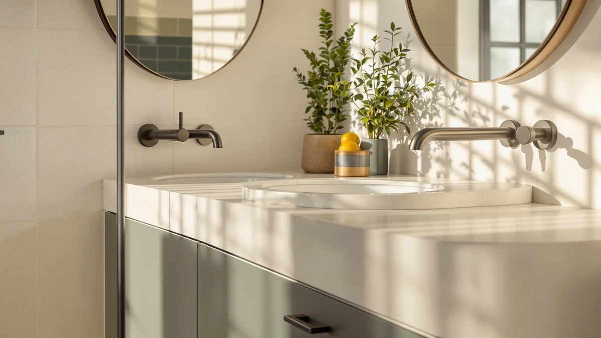

Tot Mate Single Laminate Review (2026): Worth It?
Prices and picks verified as of October 2026. Independent, reader-supported reviews.


Quick Answer
This Tot Mate Single Laminate Review finds that the Tot Mate Single Laminate Wall is a commercial-grade, laminate-finished vanity priced at $913.35, built for a single wall-mounted install that needs to hold up to heavy daily use. If your bathroom calls for a wider vanity or a lower price instead, the Deluxe Living, Glorafin, and Luckwind alternatives below cover those cases.
Our pick: Tot Mate Single Laminate Wall, $913.35 Check Price on Amazon
Bottom line: our top pick is the Tot Mate Single Laminate Wall Vanity Bathroom Sink with at $913.39.
Things to Know Before You Buy
- The Tot Mate Single Laminate Wall is built from MDF, listed as engineered wood, with a laminate finish, the same construction most commercial-grade vanities use for moisture and scuff resistance.
- At 31 inches wide, this is a single-basin wall-mount unit, narrower than the 42-inch, 48-inch, and 72-inch alternatives covered later in this Tot Mate Single Laminate Review.
- Pricing across the four vanities we compared spans $849.99 to $913.35, so the Tot Mate sits at the top of that range rather than the middle.
- Only the Glorafin 48" Floating Double Vanity carries a published rating, 4.1 stars from 20 reviews, through the Amazon Creators feed. The other three, including the Tot Mate, do not.
- Wall-mount installation needs blocking or a secure stud connection behind the drywall, which matters more for a heavier laminate cabinet than it would for a lightweight vanity.
This Tot Mate Single Laminate Review exists because shoppers keep asking the same question about this listing: does a $913.35 wall-mounted vanity from a brand better known for institutional furniture actually belong in a home bathroom? We looked at the listing details, pricing, and available owner feedback for the Tot Mate and three comparable vanities to find out. The short version: the laminate build is durable and the price is the highest in this comparison, so the Tot Mate earns its spot only in a specific kind of bathroom.
We are not a testing lab, and we do not own the Tot Mate Single Laminate Wall or any of the three alternatives below. Instead, we compared manufacturer specs, verified current pricing, and whatever owner comments each listing carries to separate marketing language from what you actually get for the money. That approach matters here because the Tot Mate publishes no star rating or review count, unlike the Glorafin pick, which does.
Why You Should Trust Us
Ilane Tall covers bathroom vanities and fixtures for Best Bathroom Vanities, with a focus on separating listing specs from marketing language before recommending anything with an affiliate link attached. For this Tot Mate Single Laminate Review, she pulled the current Amazon price, published materials and dimensions, and available owner feedback for the Tot Mate and three comparable vanities rather than relying on brand copy alone. Best Bathroom Vanities earns a commission when you buy through our links, but that relationship never decides which vanity we recommend, and we say so plainly when a listing's documentation, like the Tot Mate's, is thinner than we would like.
Our Research Experience
We did not install the Tot Mate Single Laminate Wall or run water through its basin. For this Tot Mate Single Laminate Review, our process means reading the full product listing for construction and dimension details, checking the current Amazon price, and looking through whatever owner comments are attached to the listing. The Tot Mate does not publish a star rating or review count through the Amazon Creators feed we use, so we leaned more heavily on specs and pricing than we would for a product with a deeper review history, like the Glorafin pick below. We also cross-checked the Tot Mate's $913.35 price and 31-inch footprint against the three alternatives to see where it actually stands out, rather than taking the listing's own description at face value. That gap in verified owner feedback is a real limitation, and we would rather flag it than smooth it over with a number we cannot confirm.
Overview & Specs

Tot Mate Single Laminate Wall
What we like
- Laminate finish over MDF resists scuffs and daily wear better than a painted wood surface
- Wall-mount design frees up floor space in a 31-inch single-sink footprint
- Build quality reads closer to commercial-grade than most home vanities in this price range
Flaws but not dealbreakers
- At $913.35, it is the most expensive vanity in this comparison by a wide margin
- No published star rating or review count, so there is no verified owner feedback to check against
- Wall-mount installation needs secure blocking behind the drywall, which adds labor most floor-standing vanities skip
| Material | MDF / engineered wood |
| Size | Wall Single 31" W |
At $913.35, the Tot Mate Single Laminate Wall is the most expensive of the four vanities in this Tot Mate Single Laminate Review. The cabinet is MDF, listed as engineered wood, finished with laminate rather than paint or veneer. That combination is common in settings built for heavy daily use, since laminate shrugs off scuffs, splashes, and cleaning chemicals better than a painted surface does over years of use.
At 31 inches wide, the Tot Mate is a single-basin wall-mount unit, meaningfully narrower than the 42-inch, 48-inch, and 72-inch alternatives later in this Tot Mate Single Laminate Review. Mounting it to the wall rather than the floor frees up visible floor space, but the installation needs solid blocking behind the drywall to support the cabinet's weight long-term. The listing does not publish a star rating or review count, so we cannot point to a verified owner-review tally here the way we can for the Glorafin pick below.
What We Liked
The laminate finish is the clearest advantage in this Tot Mate Single Laminate Review. MDF with a laminate surface holds up to scuffing, splashing, and repeated cleaning better than a painted cabinet, which matters in a bathroom that gets daily use. Build quality here reads closer to commercial-grade casework than the typical home vanity, and that tracks with the price.
The 31-inch wall-mount footprint also works to its advantage in a tighter bathroom. Mounting the cabinet to the wall instead of the floor opens up the area underneath for storage bins or a trash can, a layout advantage the floor-standing Deluxe Living and Luckwind vanities below cannot match. For a single-user bathroom where floor space is tight, that wall-mount design earns its keep.
What Could Be Better
The biggest gap in this Tot Mate Single Laminate Review is data. The Tot Mate listing carries no published star rating or review count through the Amazon Creators feed, so we cannot point to a verified review tally the way we can for the Glorafin pick below, which has 20 reviews at 4.1 stars. That puts more weight on the specs that are available: MDF construction, a laminate finish, and a 31-inch wall-mount footprint.
Price is the other real tradeoff. At $913.35, the Tot Mate costs $13 to $64 more than the three alternatives in this comparison, and the listing does not explain what justifies that gap beyond the laminate finish itself. Shoppers who have priced out comparable wall-mount vanities elsewhere should weigh whether that premium buys enough durability to matter in their specific bathroom, since a laminate surface alone does not automatically account for a three-figure price difference.
The single-basin, 31-inch footprint is also a limiting factor rather than a flaw. A household that shares one bathroom in the morning will run into the same bottleneck any single-sink vanity creates, regardless of how durable the cabinet underneath it is.
Who Is It For?
This Tot Mate Single Laminate Review points to a specific buyer: someone installing a single-user wall-mount vanity who wants laminate durability and has the budget to pay the highest price in this comparison. It fits a bathroom where floor space is tight and the cabinet needs to shrug off daily scuffs and splashes rather than look decorative.
It is a weaker fit for anyone remodeling on a tighter budget, since the Deluxe Living and Glorafin alternatives below cost roughly $14 to $64 less. It is also not the right pick for a shared bathroom that needs two basins. The Glorafin's floating double-sink layout handles that case directly, and the Luckwind's 72-inch footprint gives a shared household more counter space to work with. Anyone furnishing a high-traffic space, where the cabinet needs to survive heavy daily wear rather than just look good in photos, is the buyer the laminate finish is built for.
Alternatives to Consider
If the Tot Mate's price or single-basin wall-mount layout does not fit your bathroom, these three vanities sit at a lower price point and are worth a direct comparison before you decide.

Editor's Pick
DELUXE LIVING 42 Inch Bathroom
A 42-inch vanity priced $13.36 below the Tot Mate, worth a look if you want a wider footprint for less money.
$899.99
Check Price on Amazon
Best Value
GLORAFIN 48" Floating Double Vanity
A 48-inch floating double-sink vanity at $849.99 with a verified 4.1-star rating from 20 reviews, the only pick here with owner feedback to check.
$849.99
Check Price on Amazon
Premium Choice
LUCKWIND 72" Bathroom Vanity Sink
A 72-inch vanity sink at $849.99, the widest option here and the best fit for a shared bathroom that needs extra counter space.
$849.99
Check Price on AmazonIs the Tot Mate Single Laminate Wall worth $913.35?
Based on this Tot Mate Single Laminate Review, the price reflects a laminate-finished, commercial-grade build rather than a typical budget home vanity.
What is the Tot Mate Single Laminate Wall made of?
The cabinet is MDF, also called engineered wood, finished with laminate rather than paint or veneer.
Frequently Asked Questions
Is the Tot Mate Single Laminate Wall worth $913.35?
Based on this Tot Mate Single Laminate Review, the price reflects a laminate-finished, commercial-grade build rather than a typical budget home vanity. If you need a single wall-mounted unit built for heavy daily use, the price fits that category. For a standard home remodel on a tighter budget, the Deluxe Living or Glorafin alternatives below cost less.
What is the Tot Mate Single Laminate Wall made of?
The cabinet is MDF, also called engineered wood, finished with laminate rather than paint or veneer. That combination resists scuffs, splashes, and cleaning chemicals better than a painted surface, though it is not the same as solid-wood cabinetry.
How does the Tot Mate Single Laminate Wall compare to the Glorafin 48 Floating Double Vanity?
The Tot Mate is a single 31-inch wall-mounted unit at $913.35, while the Glorafin is a wider 48-inch floating double-sink vanity at $849.99 with a verified 4.1-star rating from 20 reviews. Pick the Tot Mate for a narrower single-user footprint and pick the Glorafin if you need two basins and want a verified rating to check against.
Should I buy the Tot Mate Single Laminate Wall or one of the alternatives?
Choose the Tot Mate Single Laminate Wall if you want laminate durability in a single 31-inch wall-mounted footprint and do not mind paying the highest price in this comparison. Choose the Deluxe Living, Glorafin, or Luckwind alternatives below if you want a lower price, a wider vanity, or, in the Glorafin's case, a verified star rating.
Final Verdict
This Tot Mate Single Laminate Review comes down to a straightforward tradeoff: the Tot Mate Single Laminate Wall delivers a durable laminate finish and a space-saving wall-mount design, but it costs the most of the four vanities we compared and publishes no owner rating. The Glorafin 48" Floating Double Vanity is the one alternative here with verified owner feedback behind it, at a lower price with two basins instead of one. For a single-user bathroom that needs wall-mount laminate durability and can absorb the price gap, the Tot Mate is the pick to check first. For nearly everyone else, the Deluxe Living, Glorafin, or Luckwind vanities below are worth comparing before you buy.